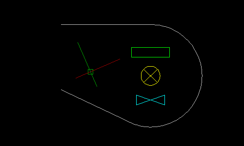
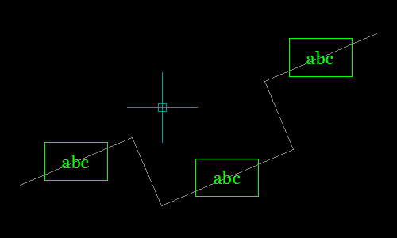
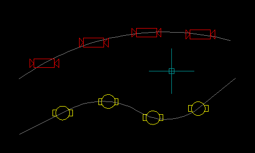
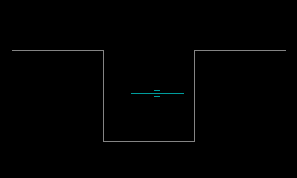

Automatic Block Break
This page is delivered for consistency purposes only, as part of the LeeMac sample module of DynALisp, which shows how DynALisp turns existing AutoLISP programs into a module. The program and its description are the work of Lee Mac, who keeps all the credit for them. The original page, with the latest version, is on Lee Mac's website: https://lee-mac.com/autoblockbreak.html
| Function Syntax | LM-AutoBlockBreak – original syntax: ABB / ABBE / ABBS (see aliases) |
| Current Version | 1.9 |
| Compatible with AutoCAD for Mac? | No |
| Compatible with AutoCAD LT? | Yes |
| Original Page | lee-mac.com/autoblockbreak.html |
Program Description
I've seen quite a few programs of this nature, enabling the user to automatically break an object onto which a block is inserted, and so I decided to write my own.
The program will allow a user to insert (or copy) a block at a specified point with all objects surrounding the block trimmed to the rectangular block outline as demonstrated in the animation below. In addition, with the Automatic Block Rotation option set to On, if a curve object is detected at the block insertion point, the block will be automatically rotated to align with the curve.
The method utilised by the program to trim the objects surrounding the block is to obtain the dimensions of the bounding box of the selected block at zero rotation, and, following transformation of such bounding box to account for block rotation, scale and orientation, the program tests for intersections between an LWPolyline (constructed from the bounding box coordinates), and a selection set of the surrounding objects.
This method, although accurate in most cases, makes the assumption that the points of intersection between the block and surrounding objects are the extremeties of the block.
The program offers three commands:
ABB: Auto Block Break
Upon calling the program with ABB, the program first prompts the user to select a block to insert. At this prompt the user may select a block from the drawing, or type Browse to browse for a drawing file to insert. The user may also alter the program rotation setting by typing Rotation when prompted.
Following a valid response, the program prompts the user to specify an insertion point for the block.
If a curve object (Arc, Elliptical Arc, Ellipse, Circle, Line, XLine, Spline, LWPolyline or Polyline) is detected at the block insertion point and the program rotation setting is enabled, the inserted block will be automatically rotated to align with the curve at an angle providing maximum readability of any attributes which may be present.
Finally, all surrounding compatible objects found to intersect with the inserted block are then trimmed to the rectangular block outline.
Example

ABBE: Auto Block Break Existing
Upon calling the program with ABBE, the user is prompted to select an existing block in the drawing. At this prompt, the user may also alter the program rotation setting by typing Rotation at the prompt.
Following a valid selection, If a curve object is detected at the insertion point of the selected block and the program rotation setting is enabled, the block will be automatically rotated to align with the curve, again at an angle retaining maximum readability.
All surrounding compatible objects found to intersect with the selected block are then trimmed to the rectangular block outline.
Example

ABBS: Auto Block Break Selection
This third command enables the user to select multiple existing blocks and automatically trim all surrounding geometry to the rectangular outline of each block.
Optionally, the program will automatically rotate each block in the selection to align with curve objects detected to pass through the block insertion point.
Example

Custom Programs
Users that are proficient in AutoLISP may also design & create their own Automatic Block Break custom programs by calling the LM:AutoBlockBreak function which is the core engine of the programs described above.
This function requires two arguments: the entity name of the block reference to be processed, and a boolean flag determining whether or not the supplied block reference should be automatically rotated to align with any objects passing through the block insertion point.
Examples of how to correctly call this function from another program may be found by studying the code for the above commands offered by this program.
Example

Bundled program notes
;;---------------------=={ Automatic Block Break }==--------------------;;
;; ;;
;; This program enables the user to insert a block at a specified ;;
;; point, with surrounding geometry trimmed to the rectangular outline ;;
;; of the block. Optionally, the program will automatically rotate ;;
;; the block to align with a curve object passing through the block ;;
;; insertion point. ;;
;; ;;
;; The program first prompts the user to select a block to insert. At ;;
;; this prompt the user may select a block from the drawing, or type ;;
;; 'Browse' to browse for a drawing file to insert. The user may also ;;
;; alter the program rotation setting by typing 'Rotation' at the ;;
;; prompt. ;;
;; ;;
;; Following a valid response, the program prompts the user to specify ;;
;; an insertion point for the block. ;;
;; ;;
;; If a curve object (Arc, Elliptical Arc, Ellipse, Circle, Line, ;;
;; XLine, Spline, LWPolyline or Polyline) is detected at the block ;;
;; insertion point and the program rotation setting is enabled, the ;;
;; inserted block is automatically rotated to align with the curve. ;;
;; ;;
;; All surrounding compatible objects found to intersect with the ;;
;; inserted block are then trimmed to the rectangular block outline. ;;
;; ;;
;;----------------------------------------------------------------------;;
;; Author: Lee Mac, Copyright © 2010 - www.lee-mac.com ;;
;;----------------------------------------------------------------------;;
;; Version 1.0 - 2010-11-22 ;;
;; ;;
;; - First release. ;;
;;----------------------------------------------------------------------;;
;; Version 1.1 - 2011-02-07 ;;
;; ;;
;; - Entire program rewritten to allow subfunction to be called with ;;
;; block object argument. ;;
;; - Multiple intersecting objects are now trimmed. ;;
;;----------------------------------------------------------------------;;
;; Version 1.2 - 2011-02-08 ;;
;; ;;
;; - Changed block insertion to Visual LISP InsertBlock method. ;;
;; - Added calling functions to trim blocks in-situ (ABBE / ABBS). ;;
;;----------------------------------------------------------------------;;
;; Version 1.3 - 2011-08-03 ;;
;; ;;
;; - Altered method used to create bounding polyline to exclude ;;
;; attributes when trimming objects surrounding block. ;;
;; - Objects surrounding blocks whose insertion point does not lie on ;;
;; a curve are now also trimmed. ;;
;;----------------------------------------------------------------------;;
;; Version 1.4 - 2011-09-30 ;;
;; ;;
;; - Added option to enable/disable automatic block rotation. ;;
;; - Updated code formatting. ;;
;;----------------------------------------------------------------------;;
;; Version 1.5 - 2013-03-04 ;;
;; ;;
;; - Fixed bug causing program to attempt to break MLines. ;;
;; - Added new LM:blockboundingbox function to correctly calculate ;;
;; the bounding box of Dynamic Block references. ;;
;; - Entire program rewritten. ;;
;;----------------------------------------------------------------------;;
;; Version 1.6 - 2013-10-01 ;;
;; ;;
;; - Fixed a bug causing the program to return an error if an object ;;
;; intersects the block bounding box at only one point. ;;
;;----------------------------------------------------------------------;;
;; Version 1.7 - 2014-11-22 ;;
;; ;;
;; - Changed the method used to detect objects located at the block ;;
;; insertion point when determining the angle for automatic ;;
;; block rotation. ;;
;;----------------------------------------------------------------------;;
;; Version 1.8 - 2017-10-09 ;;
;; ;;
;; - Revised calculation of block bounding box to ignore objects ;;
;; residing on frozen layers. ;;
;; - Added option to specify block name at command-line. ;;
;;----------------------------------------------------------------------;;
;; Version 1.9 - 2020-11-14 ;;
;; ;;
;; - Revised calculation of block rotation angle to account for ;;
;; insertion points located at the end points of the supplied curve. ;;
;;----------------------------------------------------------------------;;
Command Names And Aliases
As in every DynALisp module, each program of this sample module has one main command, named LM-*, and the original command names of Lee Mac's page are kept as its aliases: they run the same command, and can be added, renamed or removed in Dyl-Suite (saved in Resources\Aliases.csv). The rows marked ↳ are child commands of LM-AutoBlockBreak: they are run by their alias, or picked from LM-AutoBlockBreak when it lists them (their command is named Pst-*).
| Command | Aliases | Name |
|---|---|---|
| LM-AutoBlockBreak | ABB | Auto Block Break |
| ↳ ABBE | – | Auto Block Break Existing |
| ↳ ABBS | – | Auto Block Break Selection |